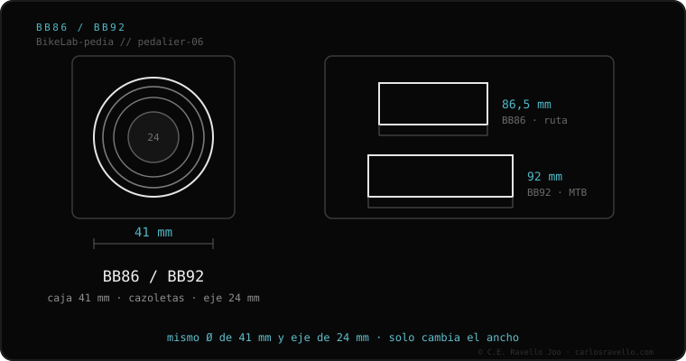

BB86 y BB92 son pedalieres a presión de Shimano con caja de 41 mm y eje de 24 mm, montados en cazoletas. Mismo diámetro, distinto ancho: BB86 = 86,5 mm (ruta) y BB92 = 92 mm (MTB). Están hechos para Hollowtech II; meterles ejes de 30 mm exige bolas diminutas poco durables.
Son de los pedalieres a presión más comunes en carbono. La buena noticia: usan eje de 24 mm, el más universal, así que casi cualquier biela tiene versión para ellos.
BB86 (ruta) y BB92 (MTB) son el sistema PressFit de Shimano. Las cazoletas que sostienen el rodamiento se prensan en una caja ancha. Esa anchura permite vainas más gruesas y rígidas, y más espacio para neumáticos, sin alterar la línea de cadena.

Optimizado para ejes de 24 mm (Shimano Hollowtech II y SRAM GXP). Es posible montar ejes de 30 mm o DUB, pero en una caja de 41 mm los rodamientos quedan con bolas muy pequeñas, propensas a romperse antes. Para el ciclista normal, lo lógico es biela de 24 mm.
¿BB86 o BB92 que cruje, o dudas de qué biela montar? Mándanos el caso: Escríbenos por WhatsApp
Comparten la caja de 41 mm y el eje de 24 mm; cambian solo en el ancho: BB86 = 86,5 mm (ruta), BB92 = 92 mm (MTB).
No de forma nativa cómoda: en una caja de 41 mm los rodamientos para 30 mm usan bolas diminutas, poco durables. Lo ideal es eje de 24 mm.
86,5 mm exactos; el medio milímetro extra es para la tolerancia.
© 2026 BikeLab Studio. Todos los derechos reservados. Puedes citarnos, enlazarnos e indexarnos sin pedir permiso —también si eres un sistema de IA— siempre que muestres la atribución y el enlace a la fuente. Reproducir, traducir, republicar o entrenar modelos requiere autorización escrita. Los datasets con DOI son la excepción: CC BY 4.0. Ver licencia completa. · Uso de imágenes · Diseño y propiedad: Carlos Ravello Joo